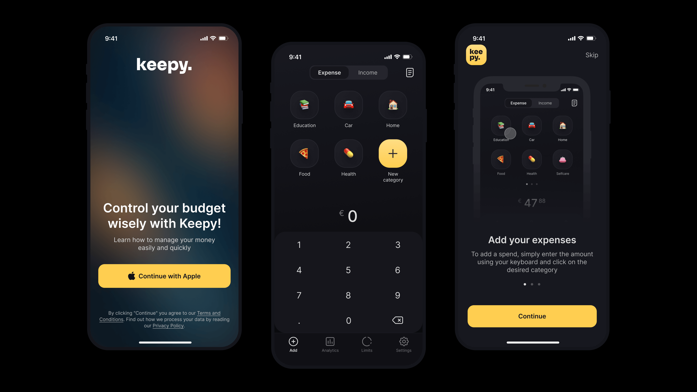
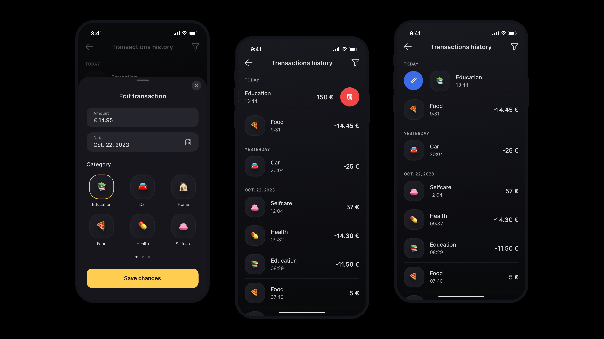
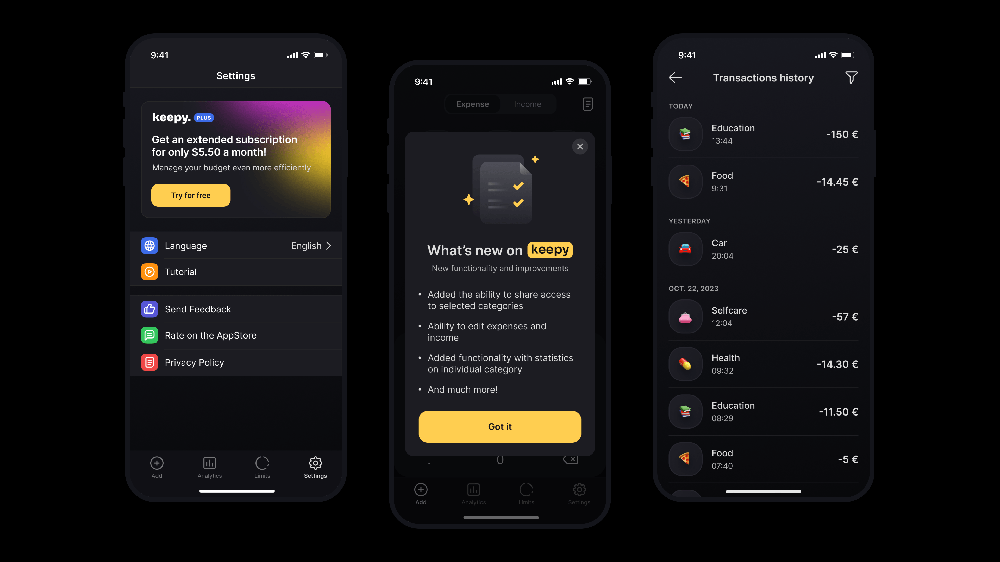

An iOS budget tracker that helps people stay on top of their expenses and income — designed end-to-end as a personal project.

Keepy is a personal iOS project — a budget tracker built from the ground up. I owned every layer of product design: research, branding, UI, illustration, ASO and the design/dev backlog, partnering with a developer to ship the app.
End-to-end product design — from research and visual identity to App Store assets and design reviews.
Built the iOS app from scratch — concept, design, and launch.
Competitive analysis to shape product direction and core user flows.
Defined the visual style and built the UI kit that the whole app draws from.
Custom illustrations and icons designed for the product.
Onboarding, expense tracking, statistics, spending history, and expense categories.
Prepared App Store screenshots following Apple guidelines and ran the design/dev backlog and reviews with the developer.

As the only designer on the project, every decision — the visual language, the flows, the illustrations, the App Store assets — was mine to own. Working that close to the product sharpens the craft: nothing hides behind a step you didn't run yourself.
Working with a single developer kept the loop tight — design, build, review, ship, repeat.
